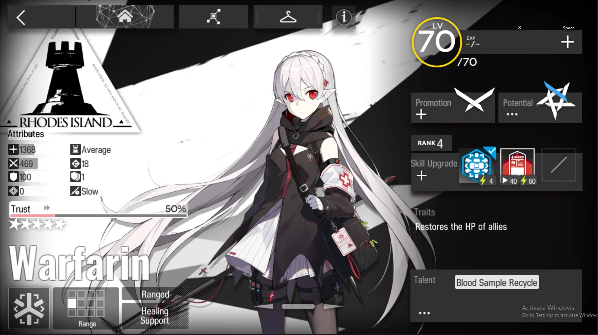

Contents
In this guide, I will go through both simple and complex topics, such as good early-game units, and the common mistakes that beginners and intermediate players may make when teambuilding. I will also discuss about a handful of Operators that are useful additions to the team during the early game.
Before I get started, let's look through some basic understandings of the game:
Deployment Points (DP):
The vital resource used to deploy Operators. Each Operator has a DP cost, dependent on class, specialty, and rarity.
Block Count:
This is the amount of enemies that a certain Operator will be able to stop them in their tracks at once. Enemies exceeding the block count will simply walk pass the Operator, ignoring it.
Elite:
The breaking of the operators' level caps. Elite Promotion resets an Operator’s level back to 1 while keeping their stats, increases their level cap, and usually grants new Skills or Talents depending on rarity.
There are no "useless" operators.
Resources that you used to upgrade 3★ and 4★ units are not always wasted. Several low-rarity units are able to carry their weight in Arknights. In 99% of maps, you won't need three medics, but that one time you do, you'll be glad you raised Hibiscus before you pulled Silence and Ptilopsis!
Higher rarity units tend to have higher DP cost.
It is tempting to deploy all high-star Operators, thinking they will just carry your team. DO NOT make this common beginner mistake! Early on in a map, players dont have the luxury of a lot of DP, and since higher-rarity Operators cost more to deploy, your team may get overrunned just for wanting to deploy a 36 DP cost Mudrock.
Ideally, you want to have a mixture of 3★ and 4★ units in the early game.
Variety exists in Arkights
There are maps that have gimmicks or enemy types that are hard-countered by a specfic unit archetype. This is mostly significant in events such as Contigency Contracts, where different modifiers requires your team composition to totally switch up from your regular team composition.
Each team composition requires these classes in their team almost 100% of the time:
First, the team requires someone with low DP cost that regenerates DP for the team to deploy their set up. That is what Vanguards are for: they have low DP costs and have Skills, Talents, or Traits that helps to generate Deployment Points.
Second, many stages have aerial enemies that cannot be blocked by ground units. This is where the Sniper comes into play.
Snipers tend to have low DP costs and deal decent DPS. Even when there are no aerial units present on the field, these Operators give you a good source of damage in a map, so they are normally deployed to deal the team's main source of damage.
Third: There will almost always be at least one enemy presnt with high defense that physical DPS operators such as snipers will struggle to kill. Instead of chipping away said enemies health, Casters will help take out said enemies, who will completely ignore DEF and instead target the enemies already low innate RES.
Fourth, someone is need to be able to block and hold off a large amount of enemies. That is where Defenders come in. These Operators can stop up to three enemies at once, preventing enemies from reaching your protection objective. They tend to boast high DEF and HP stats to survive enemy attacks, and they typically have skills that help them to reduce incoming damage.
Be aware that certain Defenders such as Saria have healing Skills instead of defense buffs. They are known as "Healing Defenders".It's important to note that these defenders can only Block 2 until they're promoted to E1. It's also important to note that their healing Skills make their allies more survivable, but do not help to survive burst damage the way a defensive Skill would be able to.
Finally, our Operators will need to be healed so they can keep fighting. For this, we aim to look for at least two Medics. In the early game, most Doctors will only have 1 Medic, so it's important to have at least two. Sometimes you may need your two Medics to take care of different groups of Operators in different positions, and at times you might need both of them to overheal a certain operator to keep them alive while enemies chips said operator's health away.
As you progress in the game, you will learn about AOE Medics. They are able to heal up to three allies at once, making them a perfect choice to heal multiple allies at once. However, keep in mind that they do not have the same healing range as single target Medics and they have weaker healing potency. In most situations, it's always best to bring 1 AOE and 1 Single Target.
Typically in 99% of the levels, you should have a balance team composition: 2 Snipers, 2 Vanguards, 2 Guards, 2 Defenders, 2 Medics and 2 Casters/1 Caster & 1 Supporter.
Personally, I have 3 operator recommendations for early players to use in their team composition. These 3 operators will come a long way to help you even during the endgame stages.
No.1 : Melentha
Melantha has high HP and ATK as well as being really cheap to deploy. Players will, at times, want to play aggressively and helidrop operators to assassinate specific targets before before things turn ugly. Melantha's high HP allows her to hold her ground long enough for her insane damage input to finish off her target. Afterwards, she can simply be retreated until she is needed again.
No.2 : Fang
Fang’s talent reduces her DP cost by 1, which may not seem like much at first, but with her max potential leaving her at 8 Deployment cost, it is no wonder why she is pretty decent even in the late game.
No.3 : Jessica
Jessica is overall a solid character to have on the team. With decent rate of fire and damage, she is able to take down multiple aerial units with ease, as well as enemies with low defense.
Have at least two or more 3★ Operators in your early game team. They do not have high DP cost and they have sufficient amount of power to hold their ground.
Should I level one Operator or several at a time? It's better to level your operators evenly rather than supercharging (overleveling) just one operator you like. It is paramount to note that your operators function as a team. DPS can’t deal sufficient damage if they are not leveled well enough, Defenders cannot hold the line for long if the Medics are not leveled high enough, and players might not survive the first wave of enemies if vanguards are underleveled.
Does Skill Level matter? Operators with high skill levels will affect the gameplay more than the level itself. So yes, it does matter.!
How high should I level my operators? This is subjective to all, but i'd recommend leveling said character to E1 L50. Doing so allows players to get a feel of how the unit operates at a normal level, with the decision of whether or not they would want to continue leveling.